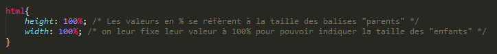
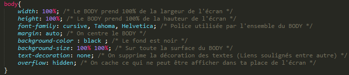
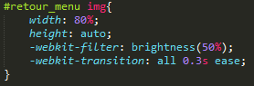
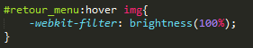

CSS
Le lien de téléchargement du site et de son code est disponible → ici ←
Afin que le site s'adapte au plus de résolutions possibles, toutes les valeurs de positionnement ou de tailles se font en pourcentage. Comme indiqué dans les commentaires, les valeurs en pourcentage se font par rapport au parent. Je déclare donc que mon html fait 100% de la page.

Le "body" prend ici toutes les caractéristiques que je lui affecte entre les deux accolades.
Il a donc une hauteur et une largeur de 100%, soit toute la place disponible, des polices d'écriture choisies dans l'ordre, le navigateur choisira en premier lieu la police "cursive", si l'utilisateur ne la possède pas il choisira alors "Tahoma" puis "Helvetica".
Je choisis également de mettre un fond de couleur noir sur toute la page avec les lignes "background-color: black" et "background-size: 100% 100%". J'aurai pu choisir la couleur noire en hexadécimal par "#000000" ou en rgb par "rgb(0,0,0)"
De même que pour le HTML, le CSS peut être répétitif. Je vais donc expliquer certaines parties parmi les plus intéressantes.
Nous pouvons voir ici que j'utilise une "id". Elle correspond au fantôme de couleur orange permettant de revenir à la navigation de notre première page.
Juste après "#retour_menu" nous apercevons un "p" désignant toute balise "p" faisant partie de "#retour_menu". Cela permet de modifier uniquement les textes contenus dans cette unique balise.
Dans son état basique le texte est donc invisible comme l'indique la seconde ligne.
Cette forme spéciale de "text-shadow" permet de placer plusieurs ombres en dessous de mon texte, en affectant des positions et des couleurs différentes à chacune d'entre elles. Cela a pour effet, avec des positions et couleurs judicieusement choisies, de créer un effet de perspective sur les lettres.
"margin-top" et "margin-left" me permettent de placer ce texte par rapport à son parent. Les valeurs sont négatives car dans le HTML le texte est placé après l'image, il faut alors le remonter pour le centrer au mieux.
Nous voyons maintenant la pseudo-classe "hover". Celle-ci permet de modifier, ou d'ajouter des caractéristiques à un élément au survol. Par exemple ici on rend le texte visible.
Il est également possible de définir une durée et une méthode d'évolution entre l'état initial et celui après le "hover", avec "transition" et "brightness" par exemple. Il existe également "transform" qui nous permet de modifier la taille d'une image.

Les deux images ci-dessus permettent donc de changer la luminosité de l'image pour la divisée par deux, puis lorsque l'utilisateur la survole, elle retrouve sa couleur d'origine, en augmentant uniformément durant une durée de 0.3 seconde.
Il est à noter que chaque navigateur possède son propre préfixe. Ici j'utilise "-webkit-" qui est celui de google chrome. Ces animations ne seront donc pas visibles sur mozilla par exemple, pour cela j'aurais dû réécrire ces lignes avec le préfixe "-moz-".
Pour finir, nous allons nous intéresser à l'effet au survol sur la page du choix des comptes rendus.
Les caractéristiques utilisées pour cela sont "border" pour affecter la couleur bleue à la bordure, "color" rendre le texte jaune, "background-size" qui permet à l'image de prendre toute la hauteur disponible (100%) en gardant sa largeur (auto) et "background-position" pour placer ce fond à 1% du coté gauche.
Lorsque l'on survol cet élément on intervertit alors les couleurs des bordures et du texte, en plaçant le fond à 99% du coté gauche (donc à droite). Le tout durant un délai de 1 seconde avec la "transition".

Page précedente

Page suivante